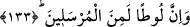
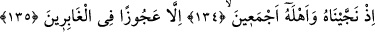
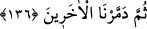
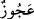
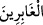

yakınında otururum. O vakit Kâbe’yi tavaf eder, makâm-ı İbrâhim’in gerisinde iki rekat
namaz kılarım. Öğle namazını Medîne-i Mustafâ (a.s.)’da kılarım. Akşam namazını Tûr-
i Sînâ’da, yatsı namazını Zülkarneyn’in seddinde edâ ederim. Her gece orada muhafızlık
yaparım. Sabah vakti olunca sabah namazı için tekrar Mekke’ye Mescid-i Harâm’a
giderim.” dedi.
133. Lût da elbette peygamberlerdendi.
İbrahim (a.s.)’ın kardeşi Hârân’ın oğlu “Lût da elbette” kavmi Sodom halkına
gönderilen “peygamberlerdendi.” Onlar Lût (a.s.)’ı tekzip edip öldürmek istediler. Lût
(a.s.) şöyle dua etti: “Rabbim! Beni ve ailemi, onların yapa geldiklerinden
(vebalinden) kurtar.” (eş-Şuara 26/169). Allah da şöyle buyurdu:
134, 135, 136. Geridekiler arasında kalan yaşlı bir kadın dışında, Lût’u ve
ailesinin hepsini kurtardık. Sonra diğerlerini yok ettik.
Kâfir olup “Geridekiler arasında kalan” Lût (a.s.)’a hıyanet eden Vâhile adındaki
“yaşlı bir kadın” olan hanımı “dışında, Lût’u ve ailesinin hepsini kurtardık.” Lût
(a.s.)’ın şeriatında putperest hanımlarla evlenmek caizdi. el-Müfredât’ta der ki: Yaşlı
kadın bir çok işi yapmaktan âciz olduğu için ona “
” (acûz) denilmiştir. “
”
kelimesi, ya azapta ve helakta geride kalanları ifade eder. Kişinin koşup ardında toz
bırakması ve yerin tozlanması tasavvur edilerek geride kalanlara “
” denilmiştir.
Yahut geçmişte helak olanların gelip geçmesi tasavvur edilerek bu anlam verilmiştir.
Buna göre mânâ: Ancak onun hanımı olan ihtiyar bir kadın hâriç. Çünkü o azabda
kalanlarla beraber kaldı ve Lût (a.s.)’a yoldaş olmadı.
Şeyh Sa’di der ki:
Hz. Lût’un eşi, kötülerle yoldaş oldu,
Nübüvvet hânedanını kaybetti, küfre yandaş oldu.
Birkaç gün süreyle Ashâb-ı Kehf ’in köpeği,
İyilere yoldaş olup hak etti insan gibi cennete girmeyi.
“Sonra diğerlerini” ülkenin altını üstüne getirerek ve üzerlerine taş yağdırarak “yok